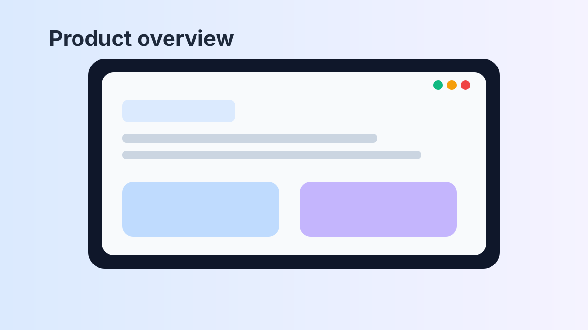
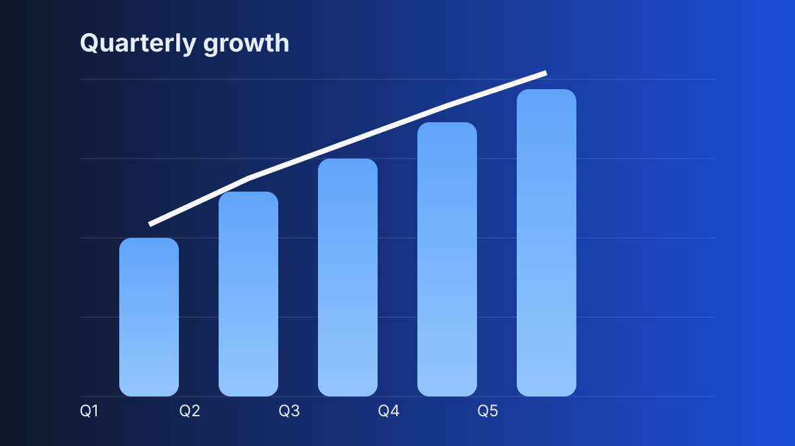
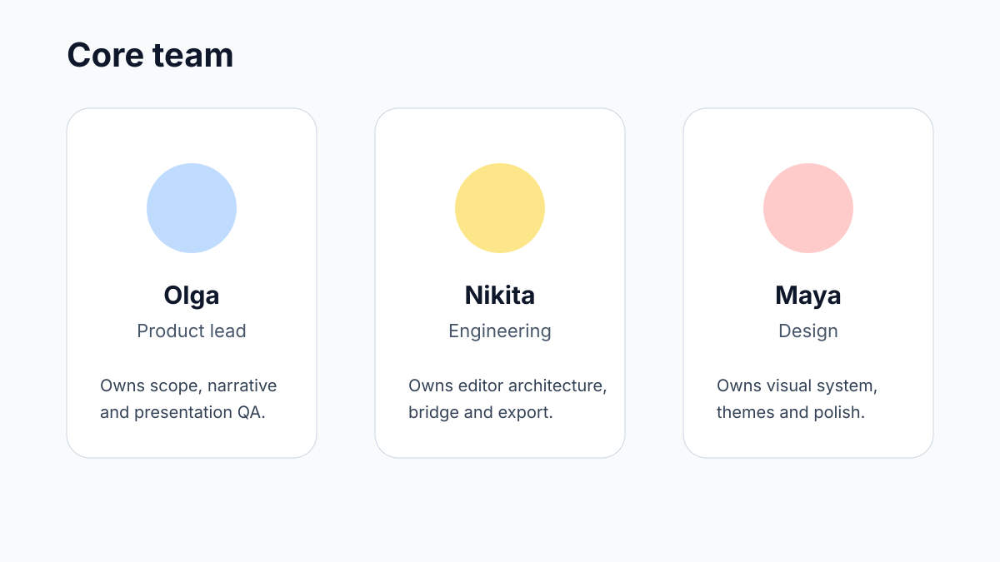

Презентация с относительными путями и внешними файлами
Этот пример специально нужен для проверки asset resolver: CSS подключён отдельным файлом, изображения лежат в assets/, а логика — в отдельном JS.
- 3SVG-ассета
- 1внешний CSS
- 1внешний JS

Что проверять в редакторе
Тут особенно полезно проверить:
- relative CSS paths
- relative image paths
- preview/export consistency
- unresolved asset diagnostics

